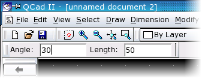

|
||
 |
||


5 QCad's User Interface
When you launch QCad, it comes up with the main application window of the graphical user interface. This window hosts the drawing documents.
Main Application Window
QCad comes with a graphical user interface (GUI) which offers most of the common features you might already know from other applications. In this chapter we take a closer look at the individual components of the QCad main application window (Figure 8).
{kind=link}
Figure 8: Main application window of QCad.
Menu and CAD Toolbar
Most functions of QCad can be accessed from its menu. For CAD related functions it might be more convenient to use the CAD Toolbar at the left. This Toolbar always shows the functions which currently make most sense to use. For example if you are about to set the startpoint of a line it shows the snapping functions which allow you to set the startpoint to an existing endpoint, a grid point or to use another positioning mode.
Layer- and Block List
To the right of the main window of QCad you can find the Layer- and the
Block List. They show the layers and blocks of the currently active graphic
document.
You can switch the Layer- and Block Lists on and off using the menu
View - Views - Layer List
and
View - Views - Block List
.
Status Bar
The Status Bar at the bottom shows various information about the
current state of QCad. At the left, the co-ordinate Widget displays the
absolute and relative position of the mouse cursor as cartesian and
polar co-ordinates. The Mouse Widget
shows information about the current function of the left and right mouse
buttons. The Selection Widget shows the number of entities that are currently
selected.
The Status Bar can be enabled / disabled using the menu
View - Views - Statusbar
.
Command Widget
Just above the status bar you can find the command line of QCad. It is
used to type in commands and to notify you about warnings and errors.
The command line can be enabled / disabled using the menu
View - Views - Command Line
.
Option Toolbar
The Option Toolbar is empty in Figure 8. Depending on the
currently active tool, it shows the options that are available for the tool.
If you prefer to change options and tool settings over the command line, you
might want to hide this toolbar using the menu
View - Views - Option Toolbar
.
Executing Commands
Everything in QCad is dependent on a command being issued first. There are different ways to execute QCad commands:
- select a corresponding tool icon on one of the toolbars
- choose a menu item from one of the pull-down menus
- type the command at the command prompt
Please note that the menus and toolbars feature the most common commands.
Some actions require further input after launching. There are again three ways how those inputs can be requested by QCad:
- Dialog Windows. E.g. the text construction tool shows a dialog window where the user can choose the font and type in the string for the text entity.
- Option Toolbar. E.g. the dialog for drawing parallels requires the input of the distance from the original entity. It displays a text input box in the second toolbar at the top where the user can type the distance (see Figure 9).
- Command prompt. E.g. when drawing a sequence of lines you can close the sequence by typing 'close' at the command prompt.

Figure 9: An optional toolbar may be shown for some tools.
Modes
QCad operates in two modes: the command mode and the normal mode . In the command mode, it accepts commands over the command line. In normal mode all keyboard input goes to the application interface.
Command Mode
The command mode is indicated by a blue label at the left bottom corner
of the command widget and a blinking cursor in the command line. In this
mode, all keyboard input that is printable, goes into the command line. Use
this mode to enter commands or co-ordinates. E.g. you can enter
line
to launch the line tool. If you press the Z key followed by the A key,
the letters 'za' appear in the command line as opposed to triggering the auto
zoom command.
Normal Mode
In this mode, QCad behaves as any other standard application. All
keyboard input is interpreted as hotkeys if specified or has no effect at
all. If you press the
A
key in this mode, QCad triggers the auto zoom command.
|